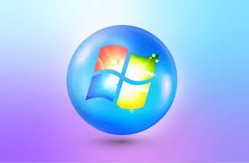
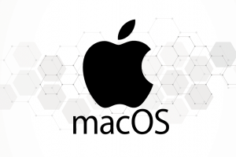

Linux
Cualquier persona puede acceder al código fuente, lo que permite modificaciones y mejoras.
Puede ser utilizado en una variedad de dispositivos, desde servidores hasta dispositivos IoT.
Diseño seguro y robusto, con un enfoque en la prevención de ataques y la estabilidad.

window
Interfaz gráfica de usuario (GUI) familiar, fácil de usar y personalizable.
Amplia compatibilidad con software y juegos, gracias a su popularidad y larga historia.
Recibe actualizaciones regulares que mejoran la seguridad y el rendimiento del sistema.

Mac
Interfaz gráfica de usuario (GUI) familiar, fácil de usar y personalizable.
Amplia compatibilidad con software y juegos, gracias a su popularidad y larga historia.
Recibe actualizaciones regulares que mejoran la seguridad y el rendimiento del sistema.